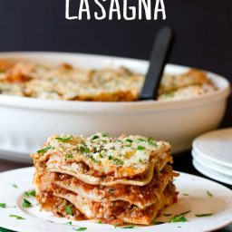

Odin Recipse

Opis
Lasagna przygotowana przez Michaela jest najlepsza
Przepis znajdzieciecie kawalek dalej
Ingriedients
Ponizej lista skladnikow
- 150 g parmezanu
- 1 cebula
- passata z pomidorow prosto z cieplej italli zbierane ukradkiem
- marcheweczka
- reszte skladnikow znajdz sam
Krok po kroku
- Wez naczynie jakies
- Wrzuc wszystko do niego
- Wstaw do piekarnika
- Piecz az bedzie dobre
Przepis wziety
Kliknij mnie aby przejs do poprzedniej strony
POWROT